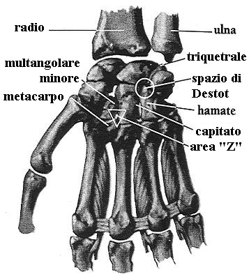

Autopsia
Han habido varios especialistas en medicina forense que se han encargado de analizar desde un punto de
vista forense la figura del Hombre de la Sindone.
Algunos de ellos fueron Pierre Barbet, Robert Bucklin, Joseph Gambescia, Delfin Villalain, Frederick
Zugibe, etc.
Empezando por analizar la figura del Hombre de la Sindone, se deduce que es un individuo de entre los
30-35 años
de edad, 1.80 mts de altura, complexion atletica, cabello largo, barba y bigote
Juntando la imagen de la Sindone y el rostro del Velo de Manoppello sin las deformidades el resultado
seria la siguiente imagen
Los cientificos se dieron cuenta que todas las manchas de sangre corresponden a heridas reales y en sus
lugares
correspondientes. La sangre es humana del tipo AB segun el medico Pierluigi Baima-Bollone,
con altos niveles de bilirrubina. El grupo sanguineo AB es muy comun en la comunidad hebrea
Analizando con luz ultravioleta el rostro se pudo apreciar varios regueros de sangre invisibles al ojo
humano:
era suero sanguineo. Esto estaba en toda la zona del rostro, ¿acaso correspondera a la hematidrosis?

La hematidrosis es un fenomeno muy raro donde solo se presenta cuando un individuo esta bajo un nivel de
estres
extremo, provocando la ruptura de los vasos sanguineos y mezclandose con el sudor, dando la impresion de
"sudar
sangre"
Comenzando por el rostro, podemos notar que el Hombre de la Sindone sufrio varios maltratos que le
desfiguro la
cara: inflamacion del pomulo derecho, abrasiones en la ceja izquierda y la punta de la nariz
tabique nasal roto y desviacion de la nariz, mechones de barba arrancados e inflamacion del menton y la
parte
superior izquierda del labio superior

La desviacion de la nariz y la inflamacion del pomulo derecho puede tener origen en el juicio por parte
del
Sanedrin a Jesus de Nazaret, si es que el Hombre de la Sindone es Jesus.
"El Sumo Sacerdote interrogó a Jesús acerca de sus discípulos y de su enseñanza.
Jesús le respondió: «He hablado abiertamente al mundo; siempre enseñé en la sinagoga y en el Templo,
donde se
reúnen todos los judíos, y no he dicho nada en secreto. ¿Por qué me interrogas a mí? Pregunta a los que
me han
oído qué les enseñé. Ellos saben bien lo que he dicho».
Apenas Jesús dijo esto, uno de los guardias allí presentes le dio una bofetada, diciéndole: «¿Así
respondes al
Sumo Sacerdote?»."
Juan 18;19-22
El Hombre de la Sindone ha sufrido una flagelacion severa en todo el cuerpo, monseñor Giulio Ricci
contabilizo
aproximadamente 120 golpes por el flagrum taxillatum, un latigo con dos o tres tiras de cuero con dos
bolas de
plomo o hueso en las puntas,
que servian para arrancar la piel del reo; los judios solo permitian un limite de 39 golpes, sin embargo
los
romanos no tenian limite


En estas imagenes se muestran lo que son las manchas de sangre en todo el cuerpo
Regresando a la cabeza notamos que en la parte de arriba y en la nuca hasta el cuero cabelludo se notan
regueros
de sangre rodeando toda la cabeza. Esto da por evidencia que al Hombre de la Sindone le colocaron un
casco con
espinas, coincidiendo
con el caso de Jesus, el unico caso conocido de crucifixion al que le colocaron una corona de espinas.
En la
catedral de Notre Dame en Paris se conserva un aro que se considera la base de la corona de espinas,
aunque
actualmente
no tiene espinas tejidas. Charles Rohault de Fleury propuso la idea de una corona de espinas en forma de
casco
observando la Sindone de Turin
de Fleury identifico dos especies de ramas espinosas con base a las reliquias asociadas a la corona de
Notre
Dame: Rhamnus lycioides y Ziziphus spina-christi


Despues de la flagelacion, el Hombre de la Sindone tuvo que cargar en su espalda algun objeto pesado,
debido a
que en las zonas de los omoplatos hay abraciones debido a un roce constante con la piel. Esto pudiera
corresponder con el patibulum o madero horizontal
de la cruz, y era habitual que un condenado a la crucifixion cargara con esa viga desde el lugar de la
sentencia
hasta el lugar de ejecucion

El patibulum tenia aproximadamente 2.10 m de largo y 13 cm de acho, con un grosor de aproximadamente 8
cm, segun
los datos de la reliquia de San Dimas en Roma

Por pura logica se plantea que el Hombre de la Sindone ha caido bajo el peso del madero por su debil
condicion a
causa de la flagelacion, impactando el rostro contra el suelo. En la punta de la nariz, las rodillas y
el la
planta del pie derecho se encontraron restos de aragonito, un mineral abundante en Jerusalen
Las caidas tambien afectarian la region del pecho, golpeando fuertemente el corazon contra la pared del
esternon, dañandolo gravemente
En 1950 el medico frances del Hospital General de San Jose de Paris, Dr. Pierre Barbet analizo los
padecimientos
del Hombre de la Sindone, llevandolo a escribir su libro: "Un doctor en el Calvario: La Pasion
de nuestro Señor Jesucristo descrita por un cirujano". En su investigacion llevo a cabo experimentos con
cadaveres humanos y extremidades amputadas para experimentar los efectos de la crucifixion romana, y una
de sus conclusiones fueron que los clavos no penetraron la palma de la mano como tradicionalmente se
representa
la crucifixion, sino que en un espacio entre los huesos de la muñeca, esto es debido a que en la palma
no hay un tejido lo suficientemente resistente para soportan un peso aproximado de 80 kg. debido a que
se
desgarra la carne en cuestion de tiempo. Por otro lado en la muñeca soporta perfectamente el peso del
individuo
en la cruz


El clavo fue puesto en el llamado "Espacio de Destot", una abertura en los huesos de la muñeca. Por ahi
pasa
el nervio mediano, y al dañarlo contrae el pulgar hacia la palma (una explicacion a la ausencia de
pulgares
en la imagen de la Sindone), y deja
la mano en la posicion "mano de predicador" por la paralisis, ademas de generar un dolor insoportable

Existe otro punto de fijacion del clavo propuesto por el dr. Frederick Zugibe, denominado "punto Z"
El Dr. Joseph Marion Gambescia, uno de los medicos que estuvo en el STURP junto con el Dr. Robert
Bucklin, ha
hecho un analisis a la posicion de los pies del Hombre de la Sindone, sus conclusiones fueron que un
clavo
penetro el tobillo derecho directamente al stipes, pasando por el frente y saliendo por el talon en la
planta
del pie; despues de eso otro clavo fue usado para unir el pie izquierdo por encima del derecho.
Curiosamente,
esta conclusion coincide con la revelacion que da la Virgen Maria a Santa Brigida:"A continuación,
cruzaron su
pie derecho con el izquierdo por encima usando dos clavos de forma que sus nervios y venas se le
extendieron y
desgarraron."
El crucificado tenia que estar en constante movivmiento para poder respirar en la cruz y liberar el
dioxido de
carbono de sus pulmones, pero el esfuerzo era terrible, no solo por el constante daño al nervio mediano,
sino
por los calambres en las piernas
y la interperie a la que estaria expuesto(el clima, los animales, etc.). Posiblemente en este proceso de
supervivencia el Hombre de la Sindone se dislocaria el brazo derecho


Los crucificados duraban dias en la cruz, pero Jesus paso poco tiempo en ella (entre 3 y 6 horas),
debido a las
torturas anteriores a la cruz. La causa principal de la muerte en la cruz era la asfixia, debido a que
el
diafragma presiona los pulmones y no permite exhalar y liberar
el CO2 del condenado y creando una carencia de oxigeno en el organismo,
Para culminar con la vida del crucificado los romanos les rompian las piernas para que no siguieran
elevandose
para respirar y murieran rapidamente, pero en el caso de Jesus o el Hombre de la Sindone fue una
excepcion:
tiene el costado derecho perforado, posiblemente traspasado toda la caja toraxica, entrando por
el 5to espacio intercostal y saliento entre la 4ta y 5ta costilla en la espalda, cerca de la columna
vertebral y
el omoplato derecho

.png)

La razon por la que fue en el costado derecho se debe a que los romanos estaban acostumbrados a dar el
golpe de
gracia por el lado derecho en combate, debido a que se encontraba desprotegido, como se muestra en la
escultura
del Galata Moribundo


Finalmente el cuerpo es descendido de la cruz, pero presenta rigor mortis o rigidez cadaverica por la
posicion
de la crucifixion: Las rodillas flexionadas y el pie izquierdo elevado por encima del derecho


Representaciones de la crucifixion segun la Sindone: -->Mons. Giulio Ricci-->Dr. Juan Manuel Miñarro
Lopez-->Angel David Zamudio Vidal "Zavi"